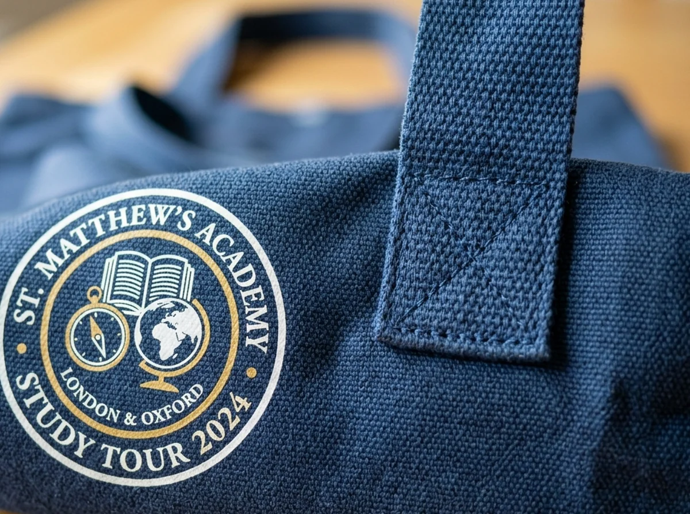

Pilihan Bahan Tas Study Tour yang Kuat dan Nyaman Dibawa

Bahan tas study tour sebaiknya dipilih berdasarkan bobot bawaan, aktivitas siswa, kebutuhan cetak logo, anggaran, dan kemungkinan penggunaan berulang setelah perjalanan.
📌 Ringkasan Inti Panduan:
- Spunbond tepat dipertimbangkan untuk paket ringan dan pembagian dalam jumlah banyak.
- Kanvas cocok bila prioritasnya struktur kokoh dan penggunaan berulang jangka panjang.
- Blacu menawarkan tampilan natural; parasut unggul pada kepraktisan penyimpanan fleksibel.
- Kekuatan jahitan sambungan, model pegangan, dan ukuran sering sama pentingnya dengan nama bahan itu sendiri.
1. Mengapa Bahan Tas Study Tour Tidak Bisa Dipilih dari Harga Saja?
Bahan tas study tour berpengaruh pada kenyamanan membawa perlengkapan, kekuatan paket saat digunakan, hasil cetak identitas sekolah, dan biaya keseluruhan.
Dua tas dengan bentuk hampir sama dapat bekerja berbeda ketika diisi botol minum dan buku. Perbedaan itu muncul dari ketebalan, susunan serat, jenis jahitan, konstruksi pegangan, serta ukuran tas. Karena itu, membandingkan harga per unit tanpa spesifikasi bisa menghasilkan keputusan yang kurang tepat.
Bayangkan siswa berjalan dari area parkir menuju ruang pameran sambil membawa notebook, air minum, dan perlengkapan pribadi. Tas harus cukup nyaman dipegang, tidak mudah terbuka, dan tidak menyulitkan gerak. Jika dipakai untuk perjalanan luar ruang, permukaan tas juga perlu mempertimbangkan cuaca, walaupun tidak setiap tas berlabel parasut otomatis kedap air.
2. Apa Kelebihan Spunbond untuk Goodie Bag Sekolah?
Spunbond merupakan bahan nonwoven yang ringan dan sering dipakai untuk goodie bag acara massal karena dapat dibuat sederhana dengan biaya relatif ekonomis.
Bahan ini layak dipertimbangkan ketika sekolah membagikan paket ringan, seperti lembar informasi, alat tulis, dan camilan. Warna tersedia dalam banyak variasi, sementara logo sederhana dapat diterapkan dengan teknik cetak sablon yang sesuai.
Keterbatasannya bergantung pada spesifikasi. Spunbond dengan bahan tipis atau sambungan kurang baik mungkin tidak cocok untuk barang berat. Tanyakan ketebalan atau gramasi (misalnya 75 atau 100 gsm), tipe sambungan jahit, batas beban yang direkomendasikan vendor, dan contoh tas terisi sebelum memesan banyak unit.
3. Kapan Blacu Cocok Digunakan untuk Study Tour?
Blacu dapat menjadi pilihan bahan tas study tour jika panitia menginginkan kesan alami, desain sederhana, dan tas kain yang dapat digunakan kembali.
Warna putih tulang atau krem yang umum dijumpai cocok dipadukan dengan ilustrasi satu atau dua warna. Untuk kunjungan kebudayaan, kegiatan sekolah bertema kerajinan, atau kunjungan edukasi dengan identitas visual natural, tampilannya terasa relevan.
Namun, blacu tidak selalu seragam ketebalannya. Evaluasi potensi kusut, perubahan ukuran setelah pencucian, serta tampilan warna cetak pada kain. Untuk membawa botol dan buku bersama-sama, perhatikan ketebalan kain dan jahitan, bukan hanya kesan kain katun pada deskripsi produk.
4. Apa Perbedaan Kanvas dan Spunbond untuk Tas Study Tour?
Kanvas umumnya dipilih ketika panitia menekankan ketahanan penggunaan ulang, sedangkan spunbond lebih sering dipertimbangkan untuk paket ringan dengan jumlah peserta besar.
| Aspek Perbandingan | Spunbond | Kanvas |
|---|---|---|
| Struktur Bahan | Nonwoven sintetis | Kain tenun rapat dengan beragam ketebalan |
| Bobot Kosong | Sangat ringan | Relatif lebih mantap dan berbobot |
| Tampilan & Kesan | Sederhana dan praktis | Bertekstur premium dan kokoh |
| Beban Bawaan | Sesuai beban ringan (1–2 kg) | Mampu membawa beban lebih tinggi (3–5 kg) |
| Penggunaan Ulang | Terbatas pada beberapa kali pakai | Sangat tinggi, awet untuk tas sekolah harian |
| Pertimbangan Harga | Paling ekonomis untuk jumlah massal | Investasi lebih tinggi sesuai daya tahannya |
Jangan menyimpulkan kanvas pasti lebih kuat tanpa mengetahui gramasi dan mutu pembuatannya. Tas kanvas dengan pegangan tidak diperkuat tetap dapat mengalami masalah. Sebaliknya, spunbond berstruktur tepat dapat mencukupi untuk paket yang memang ringan.
5. Apakah Tas Parasut atau Taslan Nyaman untuk Perjalanan?
Tas berbahan parasut atau taslan menarik untuk perjalanan aktif karena banyak modelnya ringan, fleksibel, dan dapat dilipat ketika tidak dipakai.
Pilihan ini cocok jika siswa perlu menyimpan tas cadangan di ransel atau jika panitia menginginkan model yang tidak memakan tempat. Perlu dibedakan antara bahan yang tahan percikan dan tas yang benar-benar melindungi isi dari hujan lebat. Air masih dapat masuk melalui jahitan atau ritsleting.
Periksa juga apakah tali pegangan cukup nyaman saat tas terisi. Bahan yang lentur tidak selalu memberikan bentuk stabil untuk kotak makan atau botol tinggi. Karena itu, uji dengan perlengkapan yang sama seperti yang akan dibagikan kepada peserta.
6. Apakah Mika dan Kulit Sintetis Relevan untuk Study Tour?
Mika dan kulit sintetis dapat digunakan untuk paket tertentu, tetapi bukan selalu pilihan paling praktis bagi seluruh siswa yang banyak bergerak selama perjalanan.
Mika transparan berguna untuk menampilkan isi paket, misalnya bingkisan penyambutan atau perlengkapan yang akan dibagikan di awal acara. Akan tetapi, tampilan isinya dapat menjadi berantakan jika barang bergeser. Periksa kekuatan sambungan dan pegangan.
Kulit sintetis memberikan kesan formal, sehingga lebih masuk akal untuk paket apresiasi pendamping, narasumber, atau tamu sekolah daripada perlengkapan massal seluruh peserta. Biaya dan bobot tambahan perlu dihitung.
7. Bagaimana Memeriksa Kualitas Tas sebelum Produksi Massal?
Uji bahan tas study tour sebaiknya dilakukan dengan mengisi sampel memakai barang asli, mengangkatnya berulang, serta mengevaluasi jahitan, dimensi, dan kualitas cetak.

Gunakan urutan pemeriksaan berikut:
- Bahan: cocokkan warna, tekstur, ketebalan, dan finishing dengan penawaran tertulis.
- Dimensi: ukur bagian depan, tinggi, serta gusset atau lipatan dasar dalam kondisi nyata.
- Pegangan: lihat titik penguat, posisi sambungan, dan kenyamanan genggaman tangan.
- Beban: masukkan semua barang yang akan diberikan, lalu lakukan simulasi membawa secara wajar.
- Cetak: periksa posisi logo, keterbacaan teks, dan hasil cetak pada tekstur permukaan.
- Penutup: jika ada kancing atau ritsleting, pastikan dapat dipakai dengan lancar.
8. Memilih Material Berdasarkan Situasi Perjalanan
Pemilihan material paling efektif dilakukan setelah panitia menetapkan isi paket dan jenis aktivitas, lalu membandingkan alternatif berdasarkan kriteria yang sama.
| Kebutuhan Perjalanan | Opsi Bahan Awal | Alasan Pertimbangan |
|---|---|---|
| Paket ringan dan peserta ratusan | Spunbond 75–100 gsm | Ringan, efisien, dan proses produksi massal cepat |
| Kesan natural dengan desain artistik | Blacu katun | Tekstur dan warna khas kain alami ramah sablon |
| Tas dipakai ulang jangka panjang | Kanvas premium | Struktur tebal, kuat, dan bernilai guna tinggi |
| Tas cadangan fleksibel dilipat | Parasut atau taslan | Ringan, praktis disimpan di saku ransel |
| Paket souvenir tampilan transparan | Mika PVC | Isi paket terlihat langsung dari luar |
9. FAQ Bahan Tas Study Tour
10. Kesimpulan Praktis
Bahan tas study tour terbaik adalah yang memenuhi kebutuhan paket secara nyata. Pilih spunbond untuk kebutuhan ringan yang efisien, blacu untuk tampilan alami, kanvas untuk penggunaan berulang, atau parasut untuk kemudahan penyimpanan. Untuk melihat keseluruhan proses pemesanan, kembali ke panduan goodie bag study tour dan lanjutkan dengan rekomendasi isi goodie bag study tour.

Ditulis oleh Devaliana Tensa
Praktisi konveksi tas, garment merchandiser, dan founder workshop Goodie Bag Malang dengan pengalaman lebih dari 8 tahun dalam produksi tas seminar, goodie bag pameran, dan suvenir custom korporat di Indonesia.
Artikel Terkait Seputar Tas Study Tour Sekolah